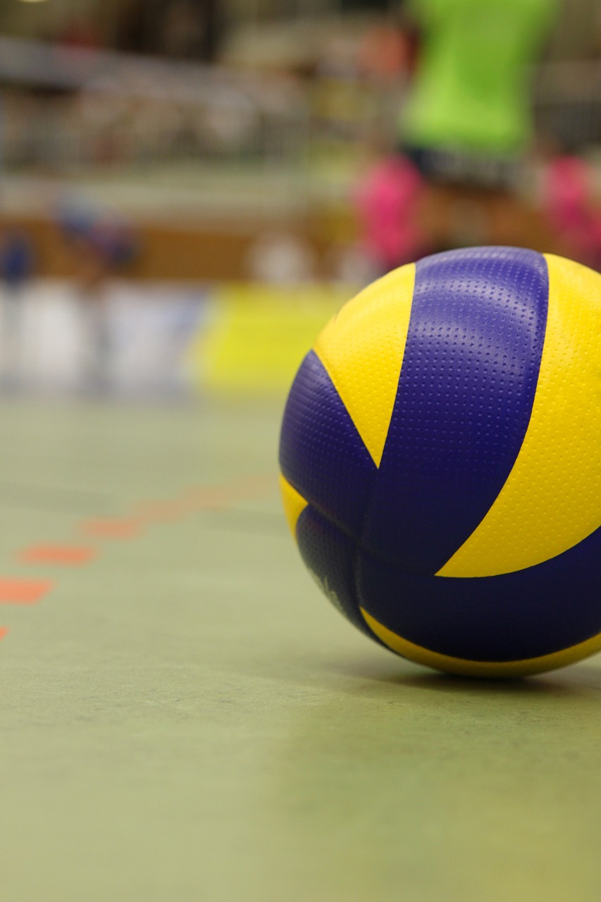

Siatkówka to sport drużynowy, w którym biorą udział dwa zespoły po 6 zawodników w każdym (rozgrywający, atakujący, dwóch środkowych i dwóch przyjmujących, libero).
Na boisku przebywa jednak tylko sześciu zawodników, libero zmienia się ze środkowym będącym w linii obrony, gdy drużyna przyjmuje zagrywkę.
Historia
Pomysłodawcą reguł gry w piłkę siatkową był William G. Morgan – na co dzień nauczyciel wychowania fizycznego w Young Men’s Christian Associaton (YMCA) w Holyoke w Massachusetts.
9 lutego 1895 odbył się w tamtejszej sali gimnastycznej premierowy pokaz stworzonej przez niego dyscypliny, którą wówczas nazywano Minonette.
W dniach 18–20 kwietnia 1947, podczas Kongresu w Paryżu, powołano do życia Międzynarodową Federację Piłki Siatkowej (FIVB). Jej pierwszym prezesem został Paul Libaud (sprawował on tę funkcję aż do 1984), a jednym z jego zastępców został Zygmunt Nowak. Wśród założycieli FIVB było 14 krajów – Belgia, Brazylia, Czechosłowacja, Egipt, Francja, Holandia, Jugosławia, Polska, Portugalia, Rumunia, Urugwaj, Stany Zjednoczone, Węgry i Włochy.
W 1949 zorganizowano pierwsze Mistrzostwa Świata mężczyzn, a w 1952 Mistrzostwa Świata kobiet. Mistrzostwa Europy mężczyzn wprowadzono do kalendarza w 1948, a Mistrzostwa Europy kobiet w 1949. Do programu olimpijskiego siatkówka (zarówno w wydaniu kobiet, jak i mężczyzn) weszła w 1964, podczas Letnich Igrzysk Olimpijskich w Tokio.

Punkt, set, mecz
Celem gry jest przebicie piłki nad siatką tak, by upadła na boisku drużyny przeciwnej lub zmuszenie rywali do popełnienia błędu (np. odbicia piłki w aut). Piłkę można odbijać (nie może być złapana lub rzucana) dowolną częścią ciała. Jeden i ten sam zawodnik nie może odbić piłki dwa razy z rzędu (z wyjątkiem pierwszego odbicia następującego po bloku, oraz pierwszej piłki przy odbiorze ataku – warunek: kilka odbić musi być w jednej akcji), a drużyna może piłkę odbić maksymalnie 3 razy (nie licząc dotknięcia piłki przez blok), zanim przebije ją na stronę przeciwnika.
Piłka przebijana na stronę przeciwnika musi przelecieć nad siatką w przestrzeni ograniczonej: od dołu – górną krawędzią siatki, na bokach – przez antenki i ich umowne przedłużenie w górę, od góry przez sufit sali.
Punkt przyznaje się za każdą wygraną akcję – tj. wtedy, gdy piłka upadnie na boisko przeciwnika, kiedy przeciwny zespół popełni błąd lub zostanie ukarany karą (druga żółta kartka).
W przeciwieństwie do większości gier zespołowych, czas gry nie jest limitowany. Mecz toczy się aż jedna z drużyn wygra 3 sety (tak więc gra się do maksymalnie 5 setów). Piąty, decydujący set rozgrywany jest obecnie jako tie-break (do 15 punktów) i nosi nazwę seta decydującego. Drużyna wygrywa set, jeśli zdobędzie co najmniej 25 punktów i ma co najmniej 2 punkty przewagi nad przeciwnikiem.
FIVB podjęło decyzję, że podczas zawodów Ligi Europejskiej w 2013 roku przetestuje nowy system punktowania. W setach 1-4 kończącym punktem będzie punkt 21 (z zachowaną dwupunktową przewagą nad przeciwnikiem – jak do tej pory). W tych setach będzie tylko jedna przerwa techniczna po zdobyciu przez jeden z zespołów 12 punktów w secie. Set "decydujący" pozostaje bez zmian. Zmiany mają ujednolicić system punktowy. Taki sam obowiązuje w siatkówce plażowej.